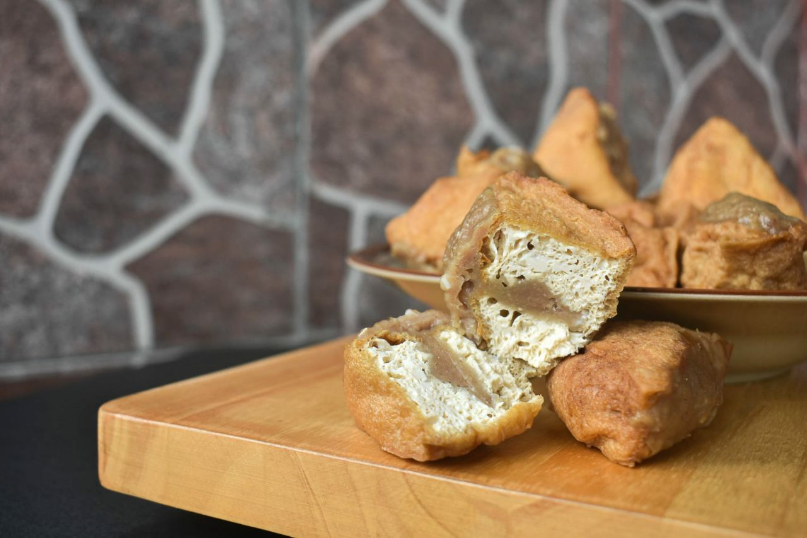
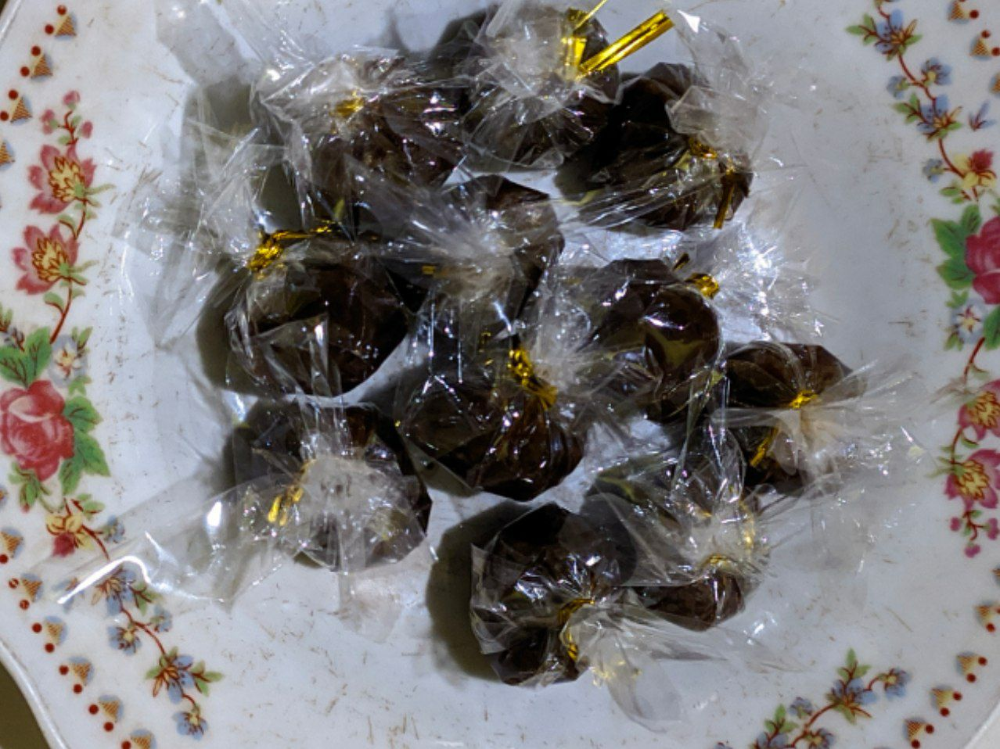
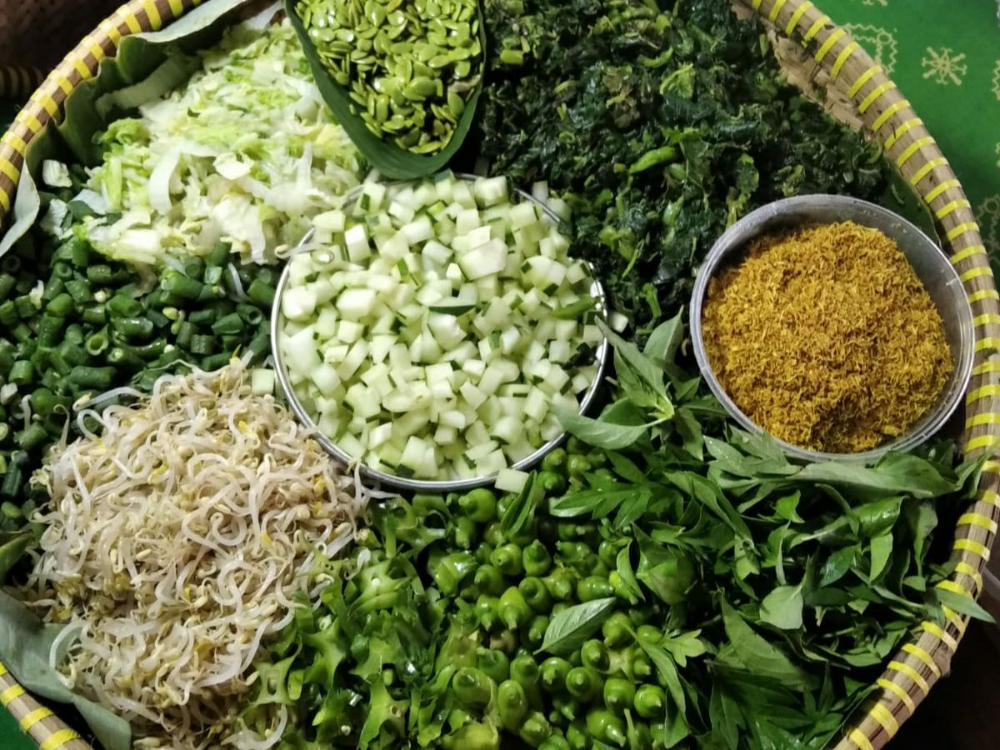

Dusun Banjarsari memiliki UMKM yang berkembang. Setiap produk dan layanan yang dihasilkan di dusun ini adalah cerminan keahlian dan dedikasi para pengusaha lokal.
Berikut merupakan produk-produk unggulan dari UMKM yang berada di Banjarsari

Tahu Bakso
Rp. 1.500,-/buah
Tahu bakso adalah salah satu produk UMKM Dusun Banjarsari, Kabupaten Sleman, Daerah Istimewa Yogyakarta. Tahu bakso ini terbuat dari tahu putih yang diisi dengan adonan daging sapi atau ayam yang dicampur dengan bawang merah, bawang putih, merica, dan garam.
Tahu bakso Dusun Banjarsari memiliki ciri khas tersendiri, yaitu menggunakan tahu putih yang berkualitas dan adonan daging yang lezat dan gurih. Tahu bakso ini juga digoreng hingga matang sempurna, sehingga memiliki tekstur yang renyah di luar dan lembut di dalam.
Contact Penjual

Jenang Salak
Rp. 70.000,-/kg
Jenang salak merupakan produk rumahan yang diolah dari hasil buah salak dengan campuran kelapa dan gula, produk ini memiliki tekstur kenyal dan lembut dengan rasa khas. Dengan sistem pembuatan yang dikerjakan dengan sistem pre order, produk jennang salak bisa tahan 5 bulan suhu ruang dan bisa lebih lama didalam kulkas, cocok sebagai cemilan atau oleh-oleh yang menggugah selera.
Contact Penjual

Pecel Madiun
Rp. 8.000,-/porsi
Pecel Madiun Kembang Turi merupakan salah satu produk UMKM Dusun Banjarsari, Kabupaten Sleman, Daerah Istimewa Yogyakarta.
Pecel Madiun Kembang Turi memiliki ciri khas tersendiri, yaitu menggunakan sayuran yang segar dan bumbu kacang yang lezat dan gurih. Pecel ini juga menggunakan kacang tanah yang disangrai sendiri, sehingga bumbu kacang yang dihasilkan memiliki cita rasa yang lebih khas.